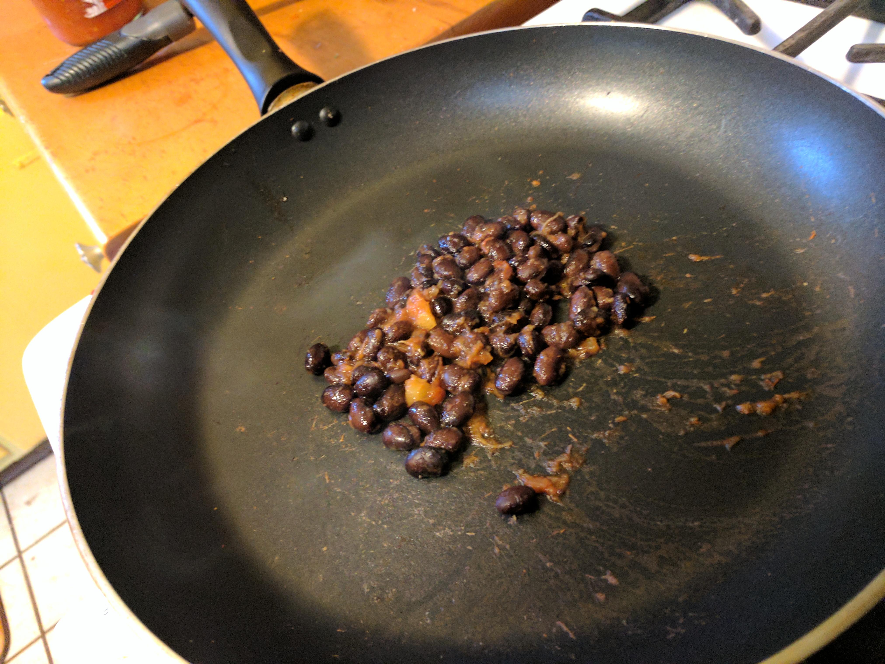
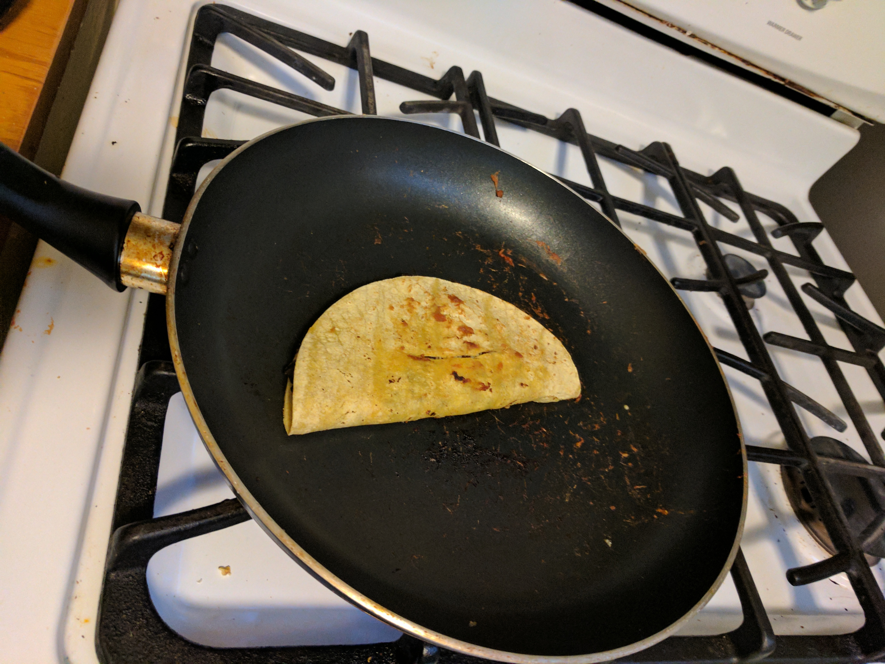
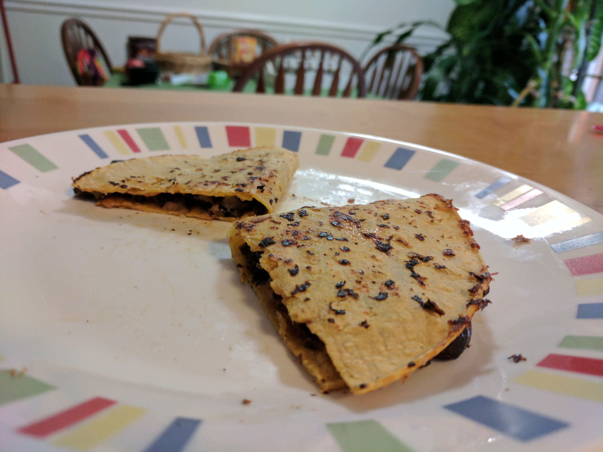

Black Bean Quesadilla
Quesadillas are one of my favorite foods to cook because you can use almost anything in them! Any kind of meat, cheese, or tortilla works. Mixing up different sauces or spices can also make them vary wildly. Black beans are also one of my favorites to cook with, because they go so well in such a great variety of meals. You can replace the beans with any kind of meat you want, or even tofu if you want to keep it vegetarian!
Ingredients
- 1/4 cup black beans, drained
- 2 tablespoons salsa
- 1/4 cup shredded cheddar
- 1 corn tortilla
How to cook
- Heat the tortilla for 2 minutes on each side on medium-low heat.
- Remove the tortilla from the pan and put the beans and salsa on.
- Stir the beans and salsa together and let heat, stirring every 15 seconds for a minute.
- Move the mixture to the side or take of the pan and place the tortilla on once more.
- Sprinkle half the cheese on one half of the tortilla, then place the bean mixture over the cheese.
- Place the remaining cheese over the beans and fold the tortilla in half.
- Heat for 2 minutes and flip.
- Cook until crispy on each side and serve!
- 
- 
- 
Have any questions or comments about this recipe? Contact us.